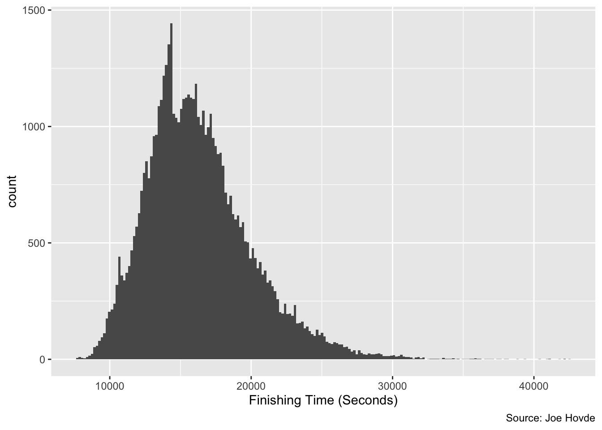
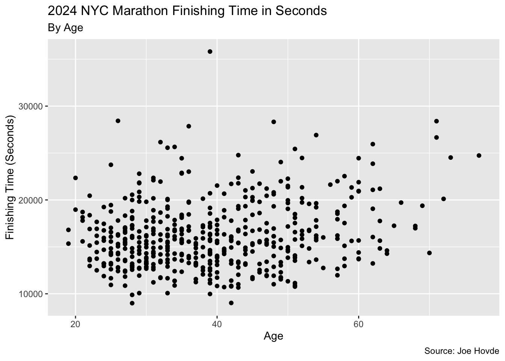
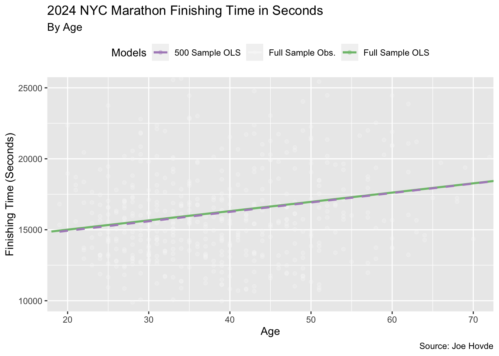
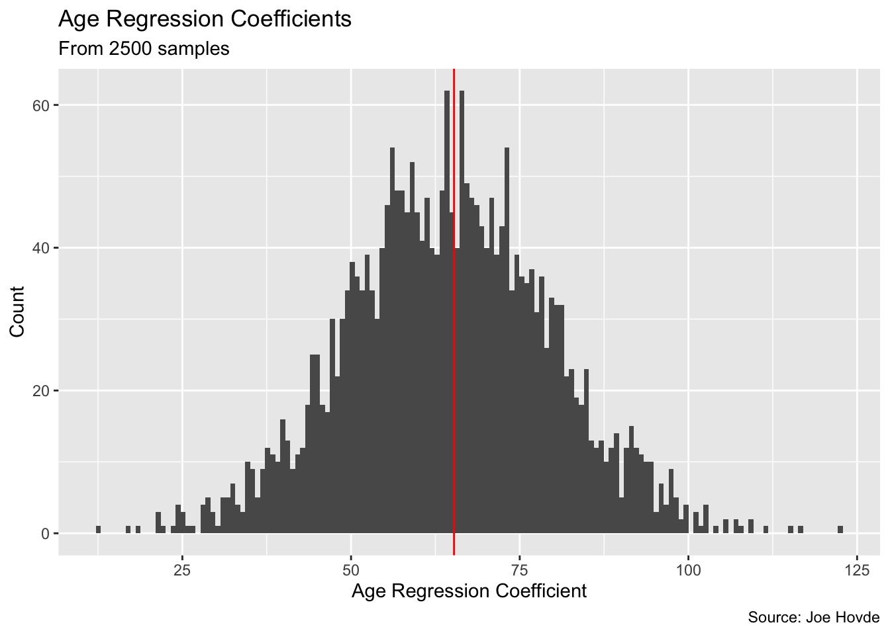

library(tidyverse)
set.seed(1)Stats II: Homework 01
Question 1
(a)
We sum the Kenya column to get the numerator, then divide by the total number of runners. For the USA, the denominator is the same as in (a), but the numerator sums the USA columns instead.
# P(Kenya)
p_kenya <- (4 + 9)/(3 + 38000 + 4 + 9 + 3 + 18000)
print(paste0("P(Kenya) = ", p_kenya))[1] "P(Kenya) = 0.000232064121101769"# P(USA)
p_usa <- (3 + 38000)/(3 + 38000 + 4 + 9 + 3 + 18000)
print(paste0("P(USA) = ", p_usa))[1] "P(USA) = 0.678394830325425"(b)
The joint probabilities are calculated by using the individual joint value # in a given table cell, divided by the total number of runners.
# P(Kenya, Top10)
p_kenya_top10 <- (4)/(3 + 38000 + 4 + 9 + 3 + 18000)
print(paste0("P(Kenya, Top10) = ", p_kenya_top10))[1] "P(Kenya, Top10) = 7.14043449543905e-05"# P(Kenya, ~Top10)
p_kenya_below_top10 <- (9)/(3 + 38000 + 4 + 9 + 3 + 18000)
print(paste0("P(Kenya, ~Top10) = ", p_kenya_below_top10))[1] "P(Kenya, ~Top10) = 0.000160659776147379"(c)
For \(P(Top10 | Kenya) = \frac{P(Top10, Keyna)}{P(Kenya)}\), we already have the numerator from (b) and the denominator from (a). For \(P(Kenya | Top10) = \frac{P(Top10, Keyna)}{P(Top10)}\), we already have the numerator from (b), but we need to calculate the marginal probability of being in the top 10 below.
# Marginal probability of being in the top 10
p_top10 <- (3 + 4 + 3)/(3 + 38000 + 4 + 9 + 3 + 18000)
# P(Top10 | Kenya) = P(Top10, Keyna)/P(Kenya)
p_top10_given_kenya <- p_kenya_top10 / p_kenya
print(paste0("P(Top10 | Kenya) = P(Top10, Keyna)/P(Kenya) = ", p_top10_given_kenya))[1] "P(Top10 | Kenya) = P(Top10, Keyna)/P(Kenya) = 0.307692307692308"# P(Kenya | Top10) = P(Top10, Keyna)/P(Top10)
p_kenya_given_top10 <- p_kenya_top10 / p_top10
print(paste0("P(Kenya | Top10) = P(Top10, Keyna)/P(Top10) = ", p_kenya_given_top10))[1] "P(Kenya | Top10) = P(Top10, Keyna)/P(Top10) = 0.4"(d)
Because we are comparing the performance of both US and Kenyan runners, we want to how likely a runner from either team is to be in the top 10. Therefore, it’s sensible to look at the conditional probability of being in the top 10 given they are either from Kenya or USA: \(P(Top10 | Kenya)\) and \(P(Top10 | USA)\). This way we are evaluating the team based on how many spots in the top 10 they place. If we were to instead condition on being in the top 10 such as \(P(Kenya | Top10)\), this calculation would make the two teams look more similar in their performance, despite the USA having many more runners than Kenya.
Question 2
(a)
# Load the data
d <- readRDS("../homework_01_files/data/nyc_marathon.RDS")
# Plot the distribution
p <- ggplot(data = d,
aes(x = time_seconds)) +
geom_histogram(bins=200) +
labs("2024 NYC Marathon Finishing Time in Seconds",
x = "Finishing Time (Seconds)",
caption = "Source: Joe Hovde")
p
The distribution’s overall outline is somewhat bell-shaped, so it looks almost normally distributed. However, the right tail is quite long, with many outliers that have very long finish times. This probably reflects amateurs, people who became injured but still wanted to finish, and other runners who are much slower than the typical runner. The distribution also has a bi-modal section at the peak. I would guess this is the difference between the professional men and women runners as the women tend to have slightly longer average finish times.
(b)
# Take a random sample of 500
sample500 <- sample_n(d, 500)
# Plot the data
p2 <- ggplot(data = sample500,
aes(x = age,
y = time_seconds)) +
geom_point() +
labs(title = "2024 NYC Marathon Finishing Time in Seconds",
subtitle = "By Age",
y = "Finishing Time (Seconds)",
x = "Age",
caption = "Source: Joe Hovde")
p2
(c)
# Regression output
out <- lm(time_seconds ~ age, data = sample500)
summary(out)
Call:
lm(formula = time_seconds ~ age, data = sample500)
Residuals:
Min 1Q Median 3Q Max
-7370.2 -2390.1 -472.8 1916.0 19621.1
Coefficients:
Estimate Std. Error t value Pr(>|t|)
(Intercept) 13603.41 564.14 24.113 < 2e-16 ***
age 66.45 13.81 4.813 1.97e-06 ***
---
Signif. codes: 0 '***' 0.001 '**' 0.01 '*' 0.05 '.' 0.1 ' ' 1
Residual standard error: 3550 on 498 degrees of freedom
Multiple R-squared: 0.04445, Adjusted R-squared: 0.04253
F-statistic: 23.17 on 1 and 498 DF, p-value: 1.973e-06The coefficient on age is 66.45, which means that the model predicts an increase in finish time of 66.45 seconds on average when age increases by 1. The interpretation for the intercept term is the predicted finish time when age equals 0, which is 13603.41 seconds. This is not very informative given that runners cannot have an age of zero, but we need an intercept term when predicting the line of best fit in OLS.
(d)
Given our model, $y_i = \beta_0 + \beta_1 x_i + u_i$, the model predicts the following:
# Extract terms from the model
beta0 <- coef(out)[1]
beta1 <- coef(out)[2]
# Runner at age 5
runner5 <- beta0 + beta1 * 5
print(paste0("Runner at age 5's predicted finish time: ", runner5))[1] "Runner at age 5's predicted finish time: 13935.653823414"# Runner at age 20
runner20 <- beta0 + beta1 * 20
print(paste0("Runner at age 20's predicted finish time: ", runner20))[1] "Runner at age 20's predicted finish time: 14932.3752266874"# Runner at age 50
runner50 <- beta0 + beta1 * 50
print(paste0("Runner at age 50's predicted finish time: ", runner50))[1] "Runner at age 50's predicted finish time: 16925.8180332342"# Runner at age 110
runner110 <- beta0 + beta1 * 110
print(paste0("Runner at age 110's predicted finish time: ", runner110))[1] "Runner at age 110's predicted finish time: 20912.7036463278"(e)
# Regression output
out <- lm(time_seconds ~ age, data = d)
summary(out)
Call:
lm(formula = time_seconds ~ age, data = d)
Residuals:
Min 1Q Median 3Q Max
-8372.1 -2536.9 -454.4 2027.1 25677.4
Coefficients:
Estimate Std. Error t value Pr(>|t|)
(Intercept) 13703.37 55.25 248.03 <2e-16 ***
age 65.26 1.33 49.08 <2e-16 ***
---
Signif. codes: 0 '***' 0.001 '**' 0.01 '*' 0.05 '.' 0.1 ' ' 1
Residual standard error: 3631 on 55460 degrees of freedom
Multiple R-squared: 0.04162, Adjusted R-squared: 0.0416
F-statistic: 2408 on 1 and 55460 DF, p-value: < 2.2e-16# Create contrasting colour palette
model_colors <- RColorBrewer::brewer.pal(3, "PRGn")
# Plot the data
p3 <- ggplot() +
geom_point(data = sample500,
alpha = 0.3,
aes(y = time_seconds,
x = age,
color = "Full Sample Obs.")) +
geom_smooth(data = d,
method = "lm",
se = FALSE,
linetype = 1,
alpha = 0.7,
aes(y = time_seconds,
x = age,
color = "Full Sample OLS")) +
geom_smooth(data = sample500,
method = "lm",
se = FALSE,
linetype = 2,
alpha = 1,
aes(y = time_seconds,
x = age,
color = "500 Sample OLS")) +
labs(title = "2024 NYC Marathon Finishing Time in Seconds",
subtitle = "By Age",
y = "Finishing Time (Seconds)",
x = "Age",
caption = "Source: Joe Hovde") +
theme(legend.position = "top") +
coord_cartesian(xlim = c(20, 70),
ylim = c(10000, 25000)) +
scale_color_manual(name = "Models", values = model_colors)
p3
The two regressions produce coefficients that are quite similar, with intercepts and age coefficients that are close in magnitude. We can see that the sample produces a coefficient on age of 66.45, whereas the full sample gives a coefficient on age of 65.26, meaning the slopes are slightly different. If we were to take more samples of increased sample size, the two regressions would produce coefficients that increasingly closer in value. This happens because the Weak Law of Large Numbers tells us that as the sample size increases towards infinity, our sample mean will converge in probability to the population mean.
(f)
# Create 2500 samples
coefficients <- replicate(2500, {
# Take a sample
sample <- sample_n(d, 500, replace = TRUE)
# Run regression on the subsample
out <- lm(time_seconds ~ age, data = sample)
# Extract coefficients
coef(out)
})
# Remove intercept coefficients and convert to dataframe
coefficients <- coefficients[-1, ] |>
as.data.frame() |>
rename("age" = "coefficients[-1, ]")
# Plot the coefficients
p4 <- ggplot(data = coefficients,
aes(x = age)) +
geom_histogram(bins=150) +
geom_vline(xintercept=65.26,
color = "red") +
labs(title = "Age Regression Coefficients",
subtitle = "From 2500 samples",
y = "Count",
x = "Age Regression Coefficient",
caption = "Source: Joe Hovde")
p4
We observe that with repeated samples, the estimated coefficient values tend to follow a normal distribution. The plot above displays a bell-shaped distribution centered around the mean full sample coefficient value of 65.26.